Sistemas de radio¶
Los sistemas de comunicación a menudo implican transmitir un mensaje \(m(t)\) a través de un canal de ancho de banda finito, es decir, un canal donde solo se puede usar un rango limitado de frecuencias. Un buen ejemplo son las transmisiones de radio FM comerciales, generalmente restringidas a una banda de frecuencia entre \(85MHz\) y \(108MHz\) donde se transmiten múltiples estaciones, a cada una de las cuales se le asigna una banda \(\le 200 KHz\).
Dado que el mensaje que estamos interesados en transmitir a menudo tiene soporte en un rango diferente de frecuencias, como es el caso de las señales de audio sin procesar en el rango de audición humana (\(20 Hz - 20 kHz\)), la señal primero debe transladarse en frecuencia para satisfacer los requerimientos del canal particular de comunicación.
El siguiente diagrama en bloques presenta un sistema de radio basico.
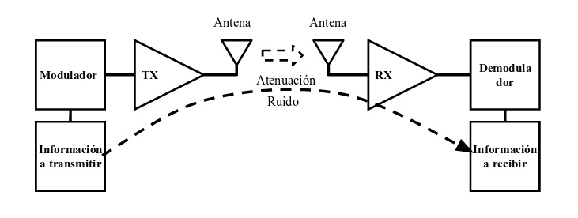
El sistema de radio tiene como objetivo enviar y/o recibir información de dos lugares remotos.
En el caso representado, la información sera trasmitica por un enlace inalambrico realizado mediante dos antenas. El enlace atenua la señal enviada y, ademas, adiciona ruido a la señal.
Recordando el teorema de Shannon-Hartley, el cual establece cuál es la capacidad del canal, para un canal con ancho de banda finito y una señal continua que sufre un ruido gaussian:
donde:
\(B\) es el ancho de banda del canal en Hertzios, \(C\) es la capacidad del canal (tasa de bits de información bit/s), \(S\) es la potencia de la señal útil, \(N\) es la potencia del ruido presente en el canal, que trata de enmascarar a la señal útil.
El teorema muestra el limite de la velocidad de transmision depende del ancho de banda y el ruido adicional al canal.
Enlace de radiocomunicaciones¶
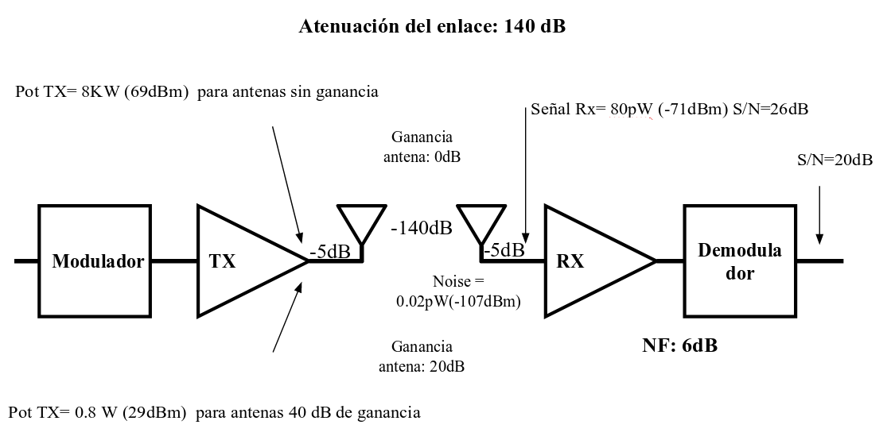
Cualidades de un receptor:¶
Sensibilidad: capacidad de recibir señales débiles. Se mide como tensión en la entrada necesaria para obtener una relación determinada entre señal y ruido a la salida.
Selectividad: capacidad de rechazar frecuencias indeseadas. Se mide como cociente de potencias de entrada de las señales de frecuencias indeseadas y de la deseada que generan la misma señal de salida.
Fidelidad: capacidad de reproducir las señales de banda base para una distorsión especificada.
Margen dinámico: cociente entre niveles máximos y mínimos de potencia de entrada que garantizan funcionamiento correcto del receptor.
Liniealidad: la falta de linealidad produce intermodulación y modulación cruzada
Sensibilidad:¶
La sensibilidad del receptor determina el nivel de señal más débil que el receptor es capaz de recibir con una reproducción aceptable de la señal modulante original. La sensibilidad última del receptor se limita por el ruido generado dentro del propio receptor, siendo la relación señal a ruido y la potencia de la señal en la salida, indispensables en la determinación de la calidad de la señal demodulada. El ruido de salida es un factor importante en cualquier medición de sensibilidad.
La sensibilidad se define como el voltaje mínimo de entrada (portadora de RF), que producirá una relación de potencia señal a ruido (SNR) especificada generalmente a la salida de la sección demoduladora, generalmente se especifica en \(\mu V\). En algunos casos la portadora de RF se modula con un determinado índice y en otros se utiliza a la portadora de RF sin modular.
La potencia de ruido en un resistor esta dada por:
Donde \(k_B\) es la constante de Boltzmann (\(\approx \; 1,38064852 \times 10^{-23} J/K\)), \(T\) es la temperatura a la que se halla el resistor en Kelvin [\(K\)], y \(R\) su valor en Ohmios [\(\Omega\)].
Entonces la potencia disponible:
BW |
Pa ruido |
V de ruido |
Vseñal 20Db |
Pseñal |
Pseñal |
|
|---|---|---|---|---|---|---|
SERVICIO |
\(KHz\) |
\(pW\) |
\(\mu V/50 \Omega\) |
\(\mu V\) |
\(pW\) |
dBm |
TELEGRAFIA |
0,2 |
8,28E-0 |
0,00643 |
0,0643 |
0,0000828 |
-131 |
BLU |
3 |
1,242E-05 |
0,02492 |
0,2492 |
0,001242 |
-119 |
AM |
10 |
0,0000414 |
0,04550 |
0,4550 |
0,00414 |
-114 |
VHF |
25 |
0,0001035 |
0,07194 |
0,7194 |
0,01035 |
-110 |
RADIO E1 |
2000 |
0,00828 |
0,64343 |
6,4343 |
0,828 |
-91 |
TV |
6000 |
0,02484 |
1,11445 |
11,1445 |
2,484 |
-86 |
RADIO STM1 |
30000 |
0,1242 |
2,49199 |
24,9199 |
12,42 |
-79 |
En receptores de AM se define la sensibilidad como el voltaje de la portadora mínimo de entrada, modulado en \(30\%\), con un tono de 1000 Hz, que produce una SNR especificada a la salida del detector de aproximadamente 10 dB, para el caso de receptores de televisión este valor es de aproximadamente 40dB. Para el caso de receptores de FM banda angosta se suelen definir básicamente 3 tipos de sensibilidades:
Sensibilidad para 12 dB Sinad:¶
A esta se la llama también Sensibilidad Útil y determina el nivel de señal de entrada de RF en el conector de antena que produce en la salida de audio una señal con una relación SINAD de \(12 dB\), donde será:
en este caso se utiliza a la portadora de RF modulada al \(60 \%\) con un tono de \(1 KHz\).
Sensibilidad para 20 dB de aquietamiento:¶
Esta indica el nivel de señal de RF de entrada que produce un silenciamiento o atenuación del ruido de salida del receptor de 20 dB, en este caso la señal de entrada no se encuentra modulada. Los valores normales que se obtienen están en el orden de \(0,35 \mu V\) a \(0,5 \mu V\).
Sensibilidad de apertura de silenciador:¶
El circuito silenciador (Squelch) en el receptor es el encargado de silenciar o enmudecer la salida de audio cuando no existe señal de entrada, este se debe habilitar cuando aparece una señal de entrada con un nivel mínimo (ajustable), este nivel mínimo con el cual se habilita la salida de audio es el que se conoce como Sensibilidad de Silenciador (Mute o Silenciador). El valor típico de sensibilidad se apertura está en el orden de \(0,18 \mu V\) a \(0,25 \mu V\), para receptores muy sensibles.
Selectividad:¶
La selectividad es una medida de la capacidad del receptor para seleccionar la estación deseada y discriminar o atenuar señales de canales adyacentes no deseadas. La selectividad se determina por la respuesta en frecuencia que presentan algunos circuitos que anteceden al detector, especialmente los filtros de la sección de FI. El valor normalizado de rechazo de señales de canales adyacentes es tipicamente de \(60 dB\).
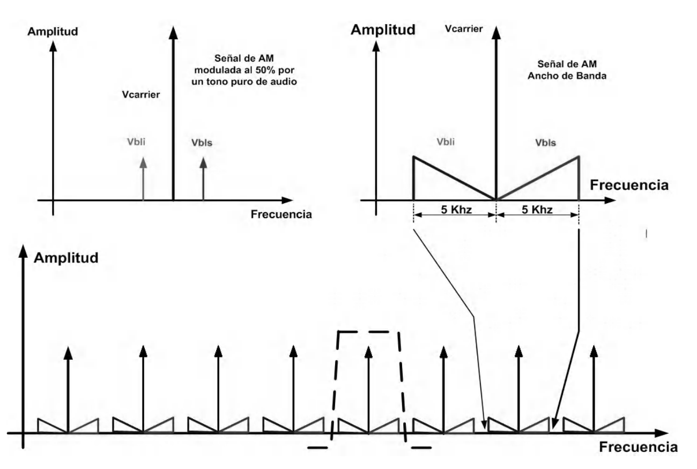
La determinación del rechazo de señales de canal adyacente en un receptor se puede realizar en forma estática o dinámica: En la forma dinámica se utilizan dos generadores de radiofrecuencia, uno se sintoniza a la frecuencia nominal del receptor con un nivel equivalente al de sensibilidad útil, el segundo generador se sintoniza a la frecuencia del canal adyacente cuyo rechazo se desea medir, modulado con un tono de 400 Hz y un índice del \(60\%\), se ajusta el nivel de salida de este generador hasta que la relación SRD / RD se degrade de 12 a 6 dB, el rechazo se especifica por la diferencia en dB de los niveles de salida de los dos generadores.
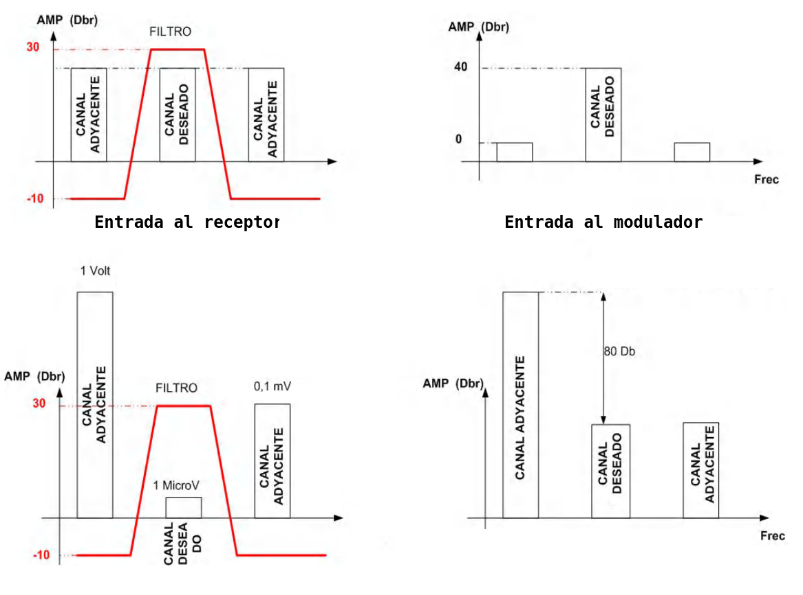
Ancho de Banda:¶
El ancho de banda que debe presentar el receptor depende del tipo de servicio al que lo destinará, para el caso de AM con modulación de telefonía, el ancho de banda debe ser de 6 Khz, para AM comercial es de \(10 KHz\), para FM banda angosta debe ser de \(15 KHz\). En el receptor la etapa encargada de determinar el ancho de banda es la FI a través de los filtros que utiliza, como se ve mas adelante.
Linealidad¶
Distorsión Por Modulación Cruzada:¶
Si se inyectan simultáneamente señales deseadas y no deseadas, en transistores u otros dispositivos alinéales, estos producirán distorsión de tercer orden, la modulación de la amplitud sobre la señal no deseada se puede transferir a la portadora deseada. Esto se conoce como Modulación Cruzada.
La modulación cruzada crea problemas principalmente si la señal que se desea recibir es débil y se encuentra en un canal adyacente de una señal indeseada intensa, procedente de un transmisor cercano. Puede presentarse en la etapa mezcladora o en el amplificador de RF, por lo que el uso de FETs en lugar de BJTs es deseable en ambas etapas.
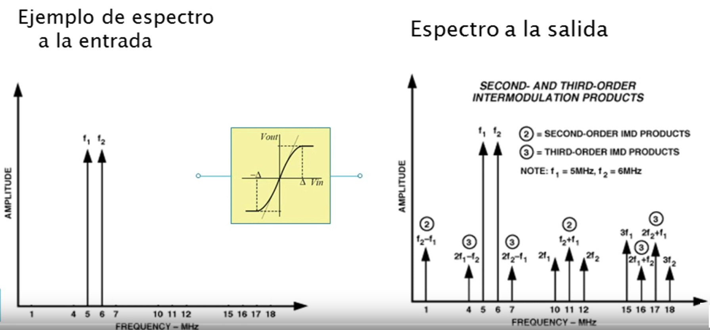
Intermodulación de Tercer Orden con dos tonos:¶
La distorsión por intermodulación también llamada distorsión de frecuencia, se produce en las primeras etapas del receptor, debido a la presencia de múltiples señales de RF de entrada y sus armónicos, mezcladas unas con otras y con la señal del oscilador local, produciendo en la salida frecuencias que no se encuentran presente en la entrada. Esto se produce por la alinealidad que presentan los elementos activos que se utilizan tanto en el amplificador de RF como en el mezclador. Cuando se aplican en la entrada en forma simultánea dos señales o tonos de frecuencias F1 y F2 próximas y si sus amplitudes son tales que alcanzan la zona no lineal del amplificador de entrada, aparecen en la salida frecuencias resultado de la mezcla que no estaban presente en la entrada, tales como:
La intermodulación de segundo orden genera componentes en la zona del segundo armónico y frecuencia diferencia (2f1, 2f2, f1 f2 , etc.), pudiendo presentar problemas en sistemas de banda ancha, en sistemas de banda angosta generalmente caen fuera de la banda. Los productos de Intermodulación de Tercer Orden frecuentemente caen dentro del ancho de banda, generando señales en la zona del tercer armonico y de las frecuencias de entrada, esto se puede ver en la siguiente figura
Las componentes de productos de intermodulación de tercer orden que caen fuera de la banda de interés son facilmente eliminados por los filtros que siguen al mezclador, pero los productos cruzados producidos cuando a la segunda armonica de una señal se le agrega la frecuencia fundamenta de otra señal .
Productos de intermodulacion de tercer orden con dos tonos¶
(2f1 – f2) ó (2f2 – f1) en la figura anterior, las componentes caen dentro de la banda original, siendo muy dificil su eliminación, donde el resultado será siempre 3, a esto se lo denomina Como la amplitud de los tonos de intermodulación es proporcional al cubo de la amplitud de la señal de entrada, la potencia de estos tonos sera también proporcional al cubo de la potencia de la señal de entrada, por lo que la potencia de salida de los productos de intermodulación resulta ser proporcional al cubo de la potencia de salida de la señal (I3 Po3). La respuesta característica típica de distorsión de tercer orden en función de la potencia de entrada se puede en la figura siguiente:
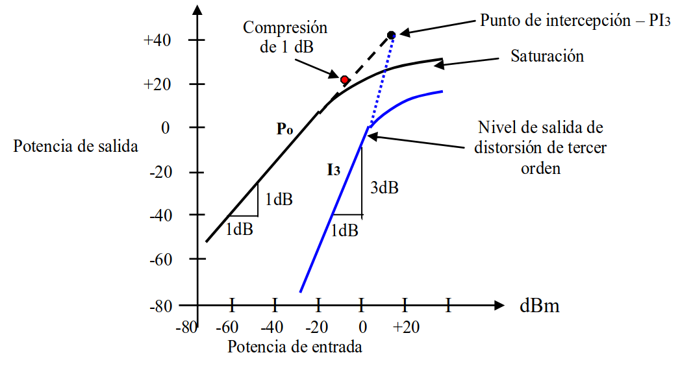
Como se puede ver la pendiente de I3 es tres veces mayor que la pendiente de Po, incrementandose 3 dB por cada dB de incremento en la potencia de entrada, se denomina Punto de Intercepción de Tercer Orden (PI3) al punto ficticio donde se cruzan las rectas de respuesta lineal y de tercer orden, en este punto se igualan la potencia de salida lineal con la potencia de salida de intermodulación de tercer orden, generalmente este punto se encuentra entre 10 y 16 dB por encima del punto de compresión de \(1 dB\). Los valores de F1 y F2 más críticos son aquellos que están próximos a la frecuencia de recepción. Cuando se mide a un receptor el rechazo de intermodulación de 3o orden, durante el proceso de homologación, las frecuencias F1 y F2 que se utilizan están separadas 1 y 2 canales de la frecuencia deseada.
Receptores de radiofrecuencia¶
Un receptor es un dispositivo capaz de aceptar y demodular una señal de radio frecuencia, a fin de obtener la información transportada en ella. La señal de entrada al receptor generalmente presenta una energia extremadamente baja, por lo tanto, un receptor típico debe ser capaz de amplificar la señal de entrada por un factor del orden de algunos cientos, para que esta tenga suficiente amplitud para ser útil.
Historia de los receptores de radio¶
Cuando el superheterodino estaba en período de perfeccionamiento, se comercializó un equipo de radio que, si bién no tenía la capacidad del heterodino en cuanto a sensibilidad ni a selectividad, en aquella época era lo más avanzado del momento. Hablamos del receptor de Radiofrecuencia Sintonizada.
Este receptor fue muy popular entre los años veinte y los años treinta. Aunque se comenzó a fabricar con triodos, con el desarrollo de la válvula tetrodo y la aparición en escena de los nuevos pentodos se facilitaron mucho las cosas para que el receptor de radiofrecuencia sintonizada se presentase al público en general, y con mucho éxito en el mercado.
Para entender como evolucionó la tecnología del momento debemos empezar desde el principio. Dejando de lado los receptores más básicos, algunos de ellos ya estudiados en otros artículos y que en la práctica no tuvieron la acogida del gran público, nos centraremos en el que puede considerarse como el primer receptor de gran éxito comercial de la historia en sus diferentes versiones. Es el llamado receptor de Radiofrecuencia Sintonizada, denominado también por algunos fabricantes (entre ellos Philips) receptor a Superinductancia.
Amplificadores sintonizados¶
Con la invención de las válvulas de vacío, en lo primero que se pensó fue en amplificar la señal de RF mediante uno o dos triodos para conseguir la ansiada sensibilidad. Para que el receptor, además, disfrutara de una buena selectividad, los pasos amplificadores tendrían que ser “selectivos”, es decir, que solo amplificaran una determinada frecuencia; aquella que se quería oir.
La escucha de emisoras se realiza mediante un simple auricular, la figura siguiente ilustra el circuito.
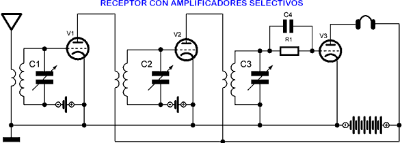
Con este receptor la señal de RF es amplificada mediante los triodos V1 y V2 montados en cascada, antes de ser demodulada. Después de la demodulacion efectuada por V3, la señal de BF resultante es amplificada por el propio triodo V3 antes de aplicarse al auricular. Con este tipo de receptor se conseguiría mejorar la sensibilidad y una selectividad, pero había ciertos problemas.
Lógicamente, con tres capaciotores variables la sintonía sería muy laboriosa para determinadas emisoras, sobre todo las más débiles. Se tendría que ir ajustando capacitores por capacitores hasta conseguir que los tres circuitos resonantes sintonizaran idéntica frecuencia, y que esta coincidiera con la de la emisora que se quería oir. La operacion era complicada para un usuario normal. Además, debido a la “capacidad parásita” placa-rejilla y rejilla-cátodo de los triodos, el circuito a menudo adolecía de inestabilidad. Estas capacidades parásitas son algo inherente a todas las válvulas triodo.
En el triodo podemos aplicar un razonamiento similar. Sabemos que la placa y la rejilla son dos elementos metálicos que pueden hacer las veces de armaduras de un condensador. Estos elementos están separados por un aislante, el vacío, que actúa como un dieléctrico, por lo que el efecto es el mismo que el que produciría un condensador conectado entre placa y rejilla (Cgp). Lo mismo podemos decir de la rejilla y el cátodo (Cgk), e incluso de la placa y el cátodo (Cpk) también, aunque esta última afecta en menor grado que las anteriores al funcionamiento del triodo ya que justo en medio se encuentra la rejilla, la cual establece cierta separación.
Estas capacidades parásitas producían una realimentación o reacción en el circuito, lo que provocaba que a partir de determinadas frecuencias el triodo se volviera completamente inestable y la recepción de emisoras se convirtiera en una “jaula de grillos” por la cantidad de silbidos y ruidos que se producían.
El primer problema, el de los tres circuitos resonantes independientes que causaban tantas molestias para sintonizar una determinada emisora, se mitigó con algo muy sencillo: el capacitor variable en “tandem”. Se trata simplemente de “sincronizar” el desplazamiento físico de los tres condensadores variables, de manera que la frecuencia de resonancia de cada circuito sea siempre la misma para los tres, fuera la que fuera la posición de las armaduras móviles de los condensadores.
Para que se pudiera distinguir en los esquemas electrónicos un capacitor en tandem de los que se montaban de manera independiente, los primeros se representaban unidos mediante una linea discontinua, tal y como se indica en el dibujo que sigue.
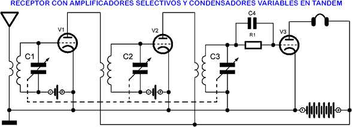
Para mejorar el problema de la inestabilidad, silbidos y ruidos causados por las capacidades parásitas del triodo, la solución fue el neutrodino.
El neutrodino¶
El siguiente paso fué anular los efectos de las capacidades parásitas del triodo. En realidad, y debido a que el circuito de placa de las válvulas no estaba constituido por resistencias puras sino por bobinas y condensadores, el problema que introducían las capacidades parásitas del triodo, que en un principio y por la configuración del circuito debería tratarse de una realimentación negativa, tenía cierto componente de realimentación positiva (como ocurría en el receptor a reacción). Esto era suficiente para estropear el invento y evitar una recepción limpia y nítida de las señales.
Se usaron capacidades estratégicamente colocadas para anular las capacidades parásitas, o mejor dicho, para anular el efecto que causan estas últimas. Estos capacitores introducían en el circuito una nueva realimentación, pero en este caso dicha realimentación se oponía a la que introducían las capacidades parásitas.
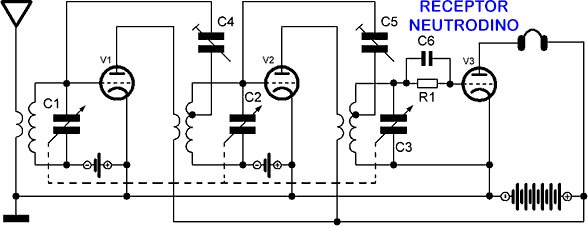
La realimentación o contra-realimentación introducida por los nuevos condensadores (C4 y C5 en el esquema superior) estaba justo en “oposición de fase” con la provocada por las capacidades parásitas. Además, estos condensadores solían ser de capacidad variable, aunque bastante más pequeños que los usados para la sintonía, lo que permitía un ajuste exacto del nivel de contra-realimentación.
Se había conseguido “neutralizar” el efecto de las capacidades parásitas del triodo. Por esta razón, a este diseño particular de receptor, inventado por el ingeniero y físico norteamericano Louis Alan Hazeltine, se le llamó “receptor neutrodino”.
El neutrodino era un receptor muy estable, libre de ruidos y silbidos y de cómoda sintonía para el usuario. Sin embargo, la llegada de la válvula pentodo lo remplazo.
Receptores de radiofrecuencias sintonizados con pentodos¶
El neutrodino mejoró sensiblemente el funcionamiento y las características generales del receptor de radiofrecuencia sintonizada con triodos. No obstante, la sustitución de estos últimos por los recien inventados pentodos puso el listón aún más alto e hizo innecesario usar la neutrodinación.
Efectivamente, con la introducción de dos rejillas más entre la de control y la placa del triodo las capacidades parásitas se redujeron sotensiblemente, de manera que dejaron de causar los problemas que tantos quebraderos de cabeza les dió a los diseñadores. Para conseguir un receptor estable ya no hacía falta usar capacitores neutralizadores.
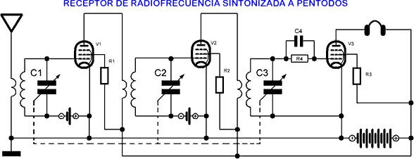
Pero por desgracia, esto no solucionó definitivamente los inconvenientes del receptor de radiofrecuencia sintonizada. Mantener exactamente la misma frecuencia de sintonía en los tres circuitos resonantes independientemente de la posición de las placas del tandem no era sencillo ya que el proceso de fabricación introducía pequeñas diferencias en los componentes que hacían que no fueran completamente idénticos. Además, el paso del tiempo y el envejecimiento de los materiales utilizados producía irremisiblemente desajustes que llevaban al receptor a una pérdida de sensibilidad.
Por estas y otras razones, cuando apareció en escena el receptor superheterodino todos los demás se dejaron de fabricar de manera casi instantánea. Las características del nuevo modelo superaron con mucho a todos los demás, lo que supuso que a partir de entonces todos los receptores pasaran a fabricarse con la técnica del llamado “batido de frecuencias” usada en el superheterodino. Pero eso será un asunto que trataremos en otro artículo posterior.
Receptor Homodino¶
Receptor homodino, es un tipo de receptor donde el demodulador opera a la frecuencia de RF. “Homodinas” significa una única frecuencia, en contraste con la doble frecuencias empleadas en la detección heterodina. La siguiente figura ilustra un receptor super-homodino, ya que se le llama super al agregar amplificadores en la etapa de RF.
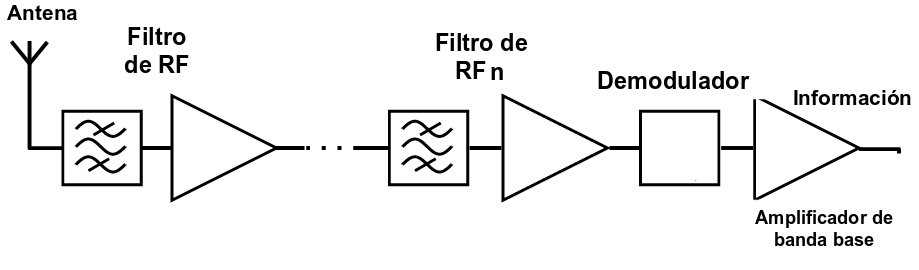
En general, la sintonia se logra con la resonancia de un circuito LC. El ancho de banda de un circuito LC cargado depende de lala resistencia del circuito, dado por la fuente, la carga y las perdidas, y del valor de la admitancia en resonancia. Si varia la admitancia de resonancia para lograr la sintonia, y suponiendo que la resistencia del circuito no se modifica, tambien se modifica el Q del sintonizado (junto con el ancho de banda del circuito). Por lo tanto, la selectividad obtenida varía en función de la frecuencia de recepción.
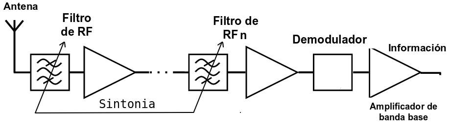
Al operar todas las etapas de RF a la misma frecuencia. existe la posibilidad de oscilaciones por acoplamientos parásitos entre entrada y salida,
No es aconsejable si el margen de frecuencias a recibir es ancho, ya que hacen falta varios filtros de banda agudos y variables.
Ejemplo: Receptor de banda lateral unica (SSB, Single Side Band)¶
En el ejemplo se muestra un detector coherente para SSB.
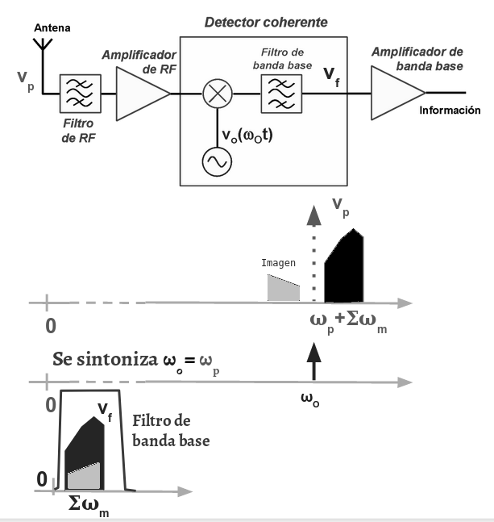
La solución para evitar que las frecuencias imagenes no sean detectadas es el uso de un detector coherente con mezclador I/Q
Receptor Heterodino¶
Heterodinar significa mezclar dos frecuencia en una etapa alineal (mezclador) a fin de obtener la suma o diferencia de las dos frecuencias de entrada. Los receptores superheterodinos basan su funcionamiento en la utilización de una o mas etapas mezcladoras, estas trasladan la frecuencia de recepción a un valor de frecuencia normalizado, generalmente menor, denominado Frecuencia Intermedia (FI), para poder mezclar o heterodinar dos señales se debe disponer de una etapa mezcladora y un oscilador local, este último es además el encargado de seleccionar la frecuencia que se desea recibir.
La idea es convertir todas las frecuencias a recibir a una unica frecuencia llamada “Frecuencia Intermedia”. Esto permite que el receptor pueda recibir distintas frecuencias con un solo demodulador, donde el mayor esfuerzo en filtrado y amplificación en alta frecuencia se hace a la frecuencia intermedia. La sintonía se lleva a cabo modificando la frecuencia del oscilador (oscilador local) y la del filtro de entrada (si el margen de frecuencias a recibir es amplio).
Super-heterodino¶
Un receptor super-heterodino se diferencia de un heterodino común gracias a una serie de mejoras como un amplificador de RF de entrada, un circuito de AGC y otras etapas que optimizan el funcionamiento.
A estos receptores básicamente se los puede clasificar en Receptores de Simple Conversión y Receptores de Doble Conversión.
Super-heterodino de simple conversión.¶
El diagrama en bloques de un receptor de simple conversión se ve a continuación:

Ejemplo practico : Receptor de radiodifusión AM.¶
\[F_{RF_{min}} = 520 KHz\]
\[F_{RF_{max}} = 1630 KHz\]
Para la sintonia de la los distintos canales se emplea un receptor superheteroino de simple conversión, donde la frecuencia \(F_{IF} = 455 KHz\) y el ancho de banda del canal es de \(\Delta F_{IF} = 10 KHz\), esto ultimo usando un filtro cerámico (SFU455A).
El oscilador local puede tomar cualquiera de las siguientes frecuencias:
Para este ejemplo, la emplearemos la primer opción: \(f_{osc_{min}} = 975 kHz\) y \(f_{osc_{min}} = 2085 kHz\).
El siguiente diagrama muestra como se realiza la recepcion del canal de \(f_{RF} = 1MHz\).

La señal de RF que que proviene de la antena ingresa a la etapa de RF. En la etapa de RF, el filtro de RF se encuentra sintonzado a la frecuencia del canal que se desea sintonizar (\(f_{RF} = 1 MHz\)). Este filtro al estar sintonizado a la frecuencia del canal no atenua el canal deseado. Tambien, la señal es amplificada por el amplificador de RF en esta etapa.
La señal luego es mezclada con la señal del oscilador local, que debe estar operando a \(f_{osc} = 1,455 MHz\).
El mezclador ideal tiene una respuesta artimetica, de tal forma, la señal de salida se obtiene de la siguiente ecuación:
Si las señales de entrada son, en el caso más simple, ondas de tensión senoidales, entonces:
Para resolver esta ecuacion, podemos emplear la identidad trigonometrica:
Empleando la identidad:
En función de la frecuencia, entonces:
Como vemos, la señal de salida esta compuesta por dos componentes:
La salida de un mezclador contiene la suma y la diferencia de las dos frecuencias de entrada, \(f_{OL} \pm f_{RF}\).
La componente de mas alta frecuencia (\(f_{OL} + f_{RF}\)) es atenuada por el filtro de IF. El ancho de banda de la señal resultante esta realcionada con la respuesta del filtro de RF, que por cuestiones constructivas, no tiene la suficiente selectividad como para eliminar los canales adyacentes. Esta selectividad se obtine del filtro de IF.
La sensibilidad a la frecuencia imagen puede ser minimizada o bien mediante un filtro sintonizable que preceda al mezclador, o bien mediante un circuito mezclador mucho más complejo.
La señal de frecuencia imagen está separada de la señal que se desea recibir en un valor igual a dos veces la FI, si esta señal de frecuencia imagen llega al mezclador, el receptor ya no será capaz de eliminarla. El rechazo de señales de frecuencia imagen generalmente se busca que sea menor a 60 dB (dependiendo esto del tipo de servicio), pudiendo ser necesario un valor mayor.
En la siguiente figura se ilustra el rechazo de frecuencia imagen de una etapa de RF.
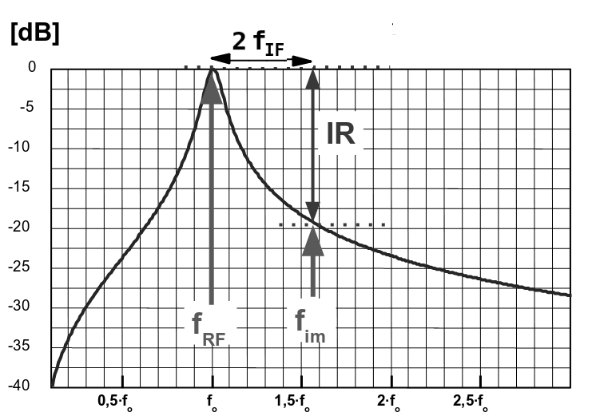
Sensibilidad del receptor¶
Para que el receptor sea capaz de recibir señales de pequeña amplitud, el aporte de ruido de este debe ser también pequeño, fundamentalmente debe tener una cifra de ruido baja, idealmente 1, para esto se suele emplear amplificadores de bajo ruido (LNA).
La fórmula de Friis se utiliza para calcular el factor de ruido total de etapas en serie, cada una con su respectivas pérdidas o ganancias y su respectiva factor de ruido. El factor de ruido total puede ser utilizado posteriormente para calcular la cifra de ruido total. El factor de ruido total se calcula mediante la siguiente fórmula:
donde \(F_n\) y \(G_n\) son el factor de ruido y la ganancia en potencia disponible, respectivamente, de la enésima etapa.
donde \(F_{resto}\) es el factor de ruido total de las etapas subsecuentes. De acuerdo a la ecuación, la cifra de ruido total, \(F_{receptor}\), es dominada por la cifra de ruido del amplificador de bajo ruido, \(F_{LNA}\), si la ganancia es lo suficientemente alta.
Ejemplo de receptor de conversión simple¶
Receptor de radiodifusión en FM (VHF, modulación en FM de banda ancha) con sintonía sintetizada con PLL:
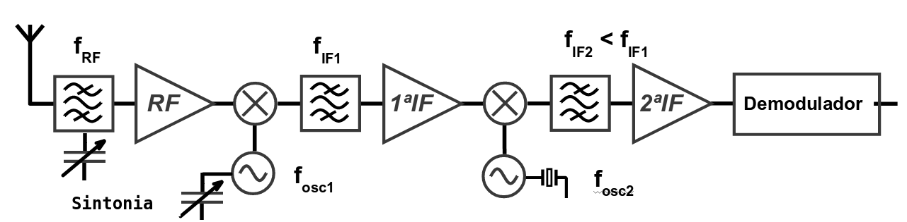
Ejemplo de circuito integrado super-heterodino de simple conversión: MAX1471.
Super-heterodino de doble conversión.¶
En el receptor de simple conversión, la selectividad del receptor está fijada por la del filtro de IF. Si aumenta \(f_{IF}\) aumenta su ancho de banda (para igual Q) y, por tanto, disminuye la selectividad del receptor. Para solucionar este problema hay dos soluciones posibles:
Usar filtros de más calidad (filtros cerámicos de alta calidad o filtros de cristal de cuarzo en vez de cerámicos).
Usar una estructura de conversión múltiple (doble o triple) como el superheterodino de doble conversión.
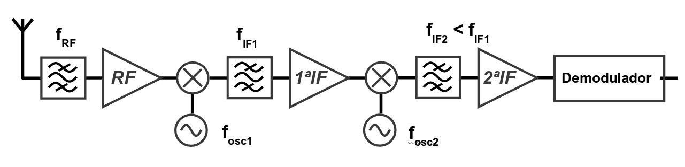
Dos frecuencias intermedias:
La primera frecuencia intermedia, \(f_{IF_1}\), se elige relativamente alta para conseguir buen rechazo a la frecuencia imagen. La segunda frecuencia intermedia, \(f_{IF_2}\), se elige relativamente baja para obtener una buena selectividad.
Primer oscilador variable y primera IF constante¶
Mejor solución si el margen de variación de \(f_{RF}\) es grande. El oscilador de más alta frecuencia es el variable, esto podria tener posibles problemas de estabilidad térmica. La solución es usar PLLs o DDSs.
Primer oscilador constante y primera IF variable:¶
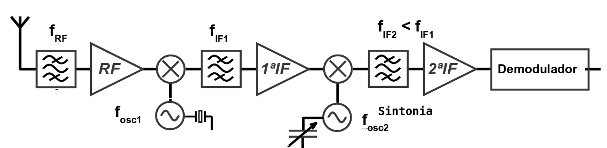
El oscilador de más alta frecuencia es de frecuencia fija (mejor desde el punto de vista de la estabilidad térmica). Solución sólo adecuada si el margen de variación de \(f_{RF}\) es pequeño. En caso contrario, existen problemas con el ruido y con el margen dinámico, ya que toda la banda a recibir es procesada por los amplificadores de RF y 1 IF, que deben ser de banda ancha.
Receptor de radioaficionado de la banda de 2 m (VHF, modulación en FM de banda estrecha):¶
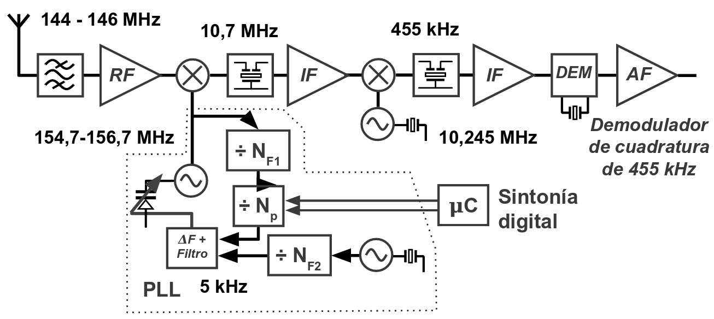
Ganancia de potencia y definiciones¶
Potencia en dBm¶
La potencia en los sistemas de comunicación a menudo se mide en la escala ‘dBm’, o la potencia de referencia medida en relación con a \(1 mW\).
P.ej. un nivel de potencia de 10 mW puede expresarse como 10 dBm.
Potencia en un cuadripolo¶
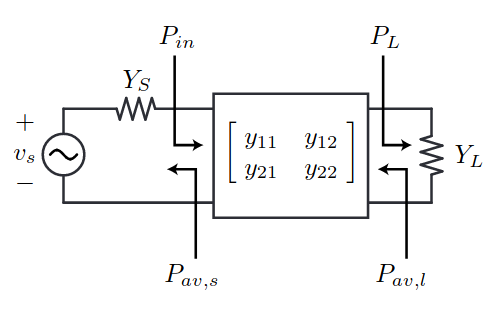
Definimos:
\(P_{in}\) : Potenicia de entrada
\(P_{L}\) : Potenicia en la carga
\(P_{av,s}\) : Potenicia máxima disponible de la fuetne (available power)
En una fuente de tensión para valores pico:
En una fuente de corriente para valores pico:
Ganancia de Potencia¶
Ganancia de trasducción¶
http://rfic.eecs.berkeley.edu/~niknejad/ee142_fa05lects/pdf/lect4.pdf
[ ]: